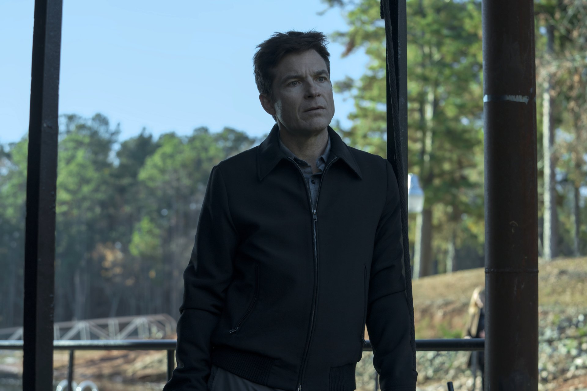
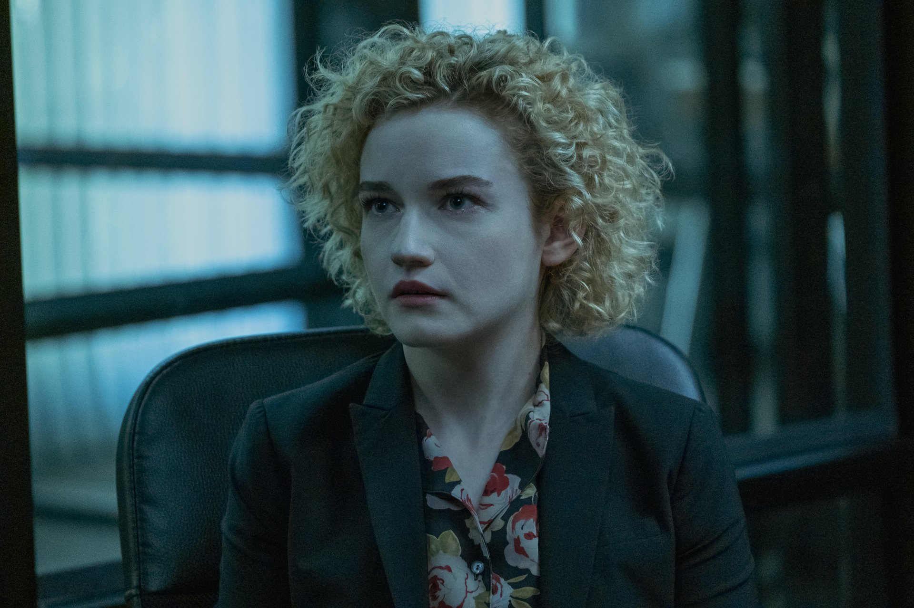
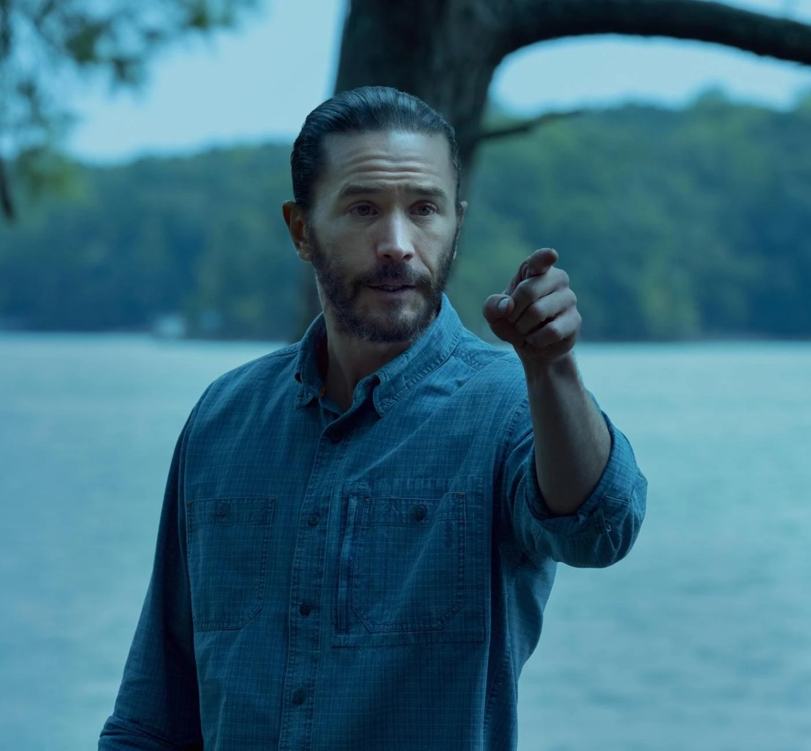

Marty Byrde
Jason Bateman
Asesor financiero. Calcula todo y casi siempre acierta, pero cada acierto lo mete un paso más adentro.
Quién es quién en el lago de los Ozarks.

Jason Bateman
Asesor financiero. Calcula todo y casi siempre acierta, pero cada acierto lo mete un paso más adentro.

Laura Linney
Ex operadora política. Empieza acompañando las decisiones de Marty y termina tomando las que él no se anima a tomar.

Julia Garner
Creció en el parque de casas rodantes y aprendió a robar antes que a confiar. La más inteligente del lago y la que menos tiene para perder.

Sofia Hublitz
La hija mayor. Es la primera de los chicos en entender de qué vive el padre, y la primera en decidir qué hacer con eso.

Skylar Gaertner
El menor. Aprende contabilidad y sociedades pantalla a una edad en que debería estar preocupado por otra cosa.

Lisa Emery
Dueña de las tierras y del cultivo de amapola. Estaba en el lago mucho antes que los Byrde y no piensa negociar nada.


Peter Mullan
El marido de Darlene. Es el que negocia, aunque las decisiones que importan las toma ella.

Janet McTeer
La abogada del cartel. Es el puente entre los Byrde y Navarro, y nunca queda claro de qué lado juega.

Felix Solis
El jefe del cartel. No aparece seguido, pero todas las decisiones terminan pasando por su mesa.

Tom Pelphrey
El hermano de Wendy. Es lo único en toda la serie que no se puede administrar ni calcular.

Charlie Tahan
Primo de Ruth. El único de la familia que quería salir del lago en vez de conquistarlo.

Jordana Spiro
La dueña original del Blue Cat. La primera persona a la que Marty le compra el silencio.